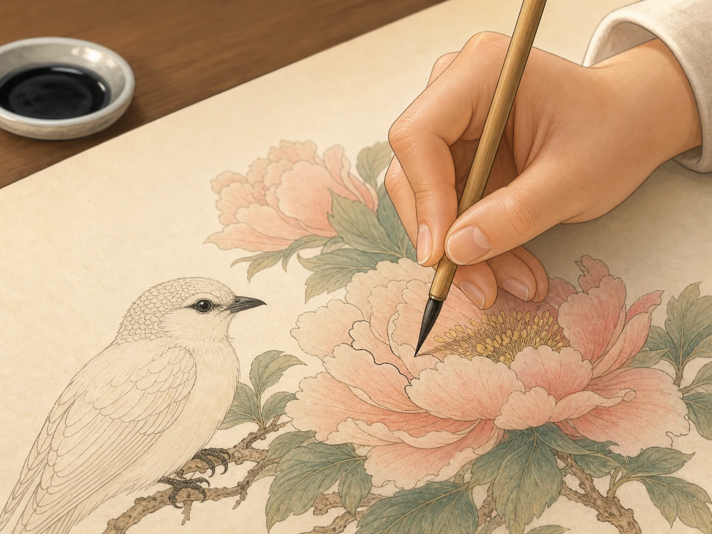
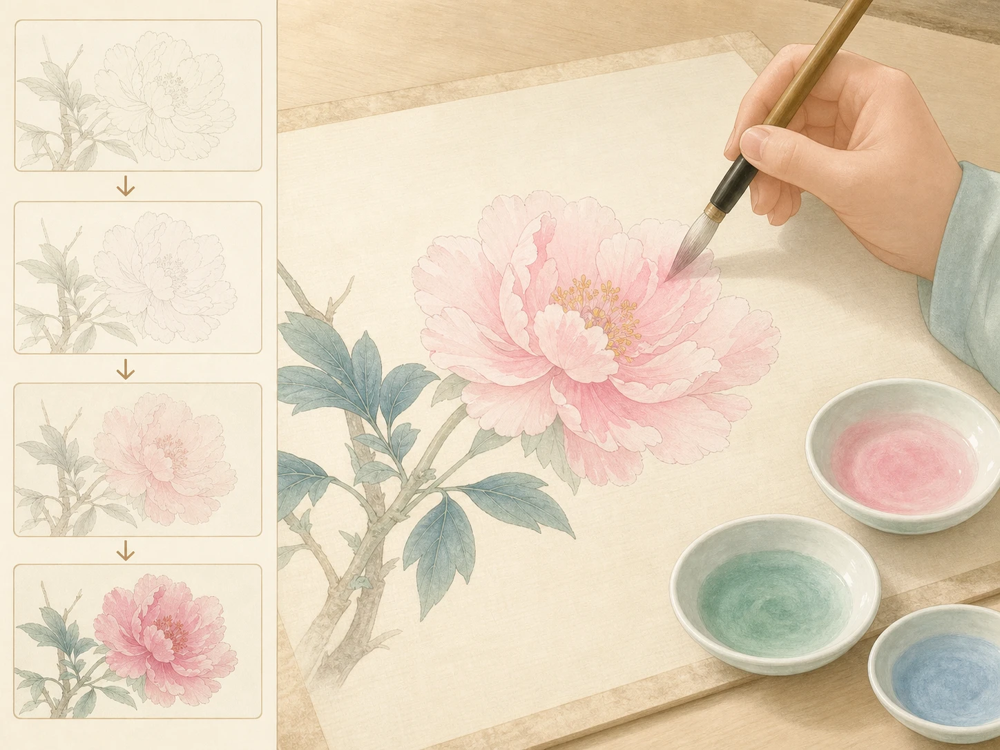

工笔画：慢慢长出来的细节
Gongbi Painting: Details That Grow Slowly
Page 1
有些画要凑近一点看，才会发现里面藏着很多小东西
Some Paintings Need a Closer Look

Gongbi paintings often treat feathers, flower petals, and tiny details around an eye with great care.
有一种中国画，远远看很安静，走近了却会发现里面有很多很多小细节。
鸟羽毛一丝一丝分开，花瓣边上有细线，叶子上还有浅浅的颜色变化。这就是工笔画。
所以看工笔画有点像找宝藏。你以为自己已经看完了，再靠近一点，又会看到新的小东西。
很多人提到工笔画，也会想到A Song dynasty emperor named Zhao Ji who was famous for painting birds and flowers.。他很喜欢画花鸟，还很爱盯着小细节看，所以画里的鸟和花常常像刚刚动了一下。
There is a kind of Chinese painting that looks calm from far away, but when you step closer, you find many tiny details inside.
Feathers separate strand by strand. Petal edges carry fine lines. Leaves hold soft changes of color. That is gongbi painting.
So looking at gongbi can feel a little like treasure hunting. You think you have seen everything, and then you lean in and find something new.
That is also why people often mention A Song dynasty emperor named Zhao Ji who was famous for painting birds and flowers. when they talk about fine detail in painting. He loved painting birds and flowers, and people remember how carefully he watched small things, so the birds and flowers in his paintings often seem almost ready to move.
Page 2
它常常先用很细很细的线，把轮廓慢慢勾出来
It Often Begins with Very Fine Lines

In gongbi painting, the artist often begins with a very fine brush. The hand must stay steady for the line to stay clean.
工笔画常常不是先上大块颜色，而是先勾线。画师会拿很细的笔，一点一点把边缘画出来。
这一笔不能太急，也不能太抖。线一稳，花瓣、羽毛和衣服的样子才会站住。
所以工笔画的第一步，常常不是“快”，而是“稳”。
Gongbi painting often does not begin with big areas of color. It often begins with line.
The artist takes a very fine brush and slowly draws the edges little by little.
The brush cannot rush, and it cannot shake too much. When the line is steady, the petal, feather, or sleeve can truly take shape.
So the first step in gongbi is often not "fast." It is "steady."
Page 3
上色也不是一次涂完，而是一层一层慢慢加上去
Color Is Added Layer by Layer

Gongbi color is often brushed on in light layers, then dried, then layered again, which makes it look especially soft and rich.
工笔画上色的时候，常常不是一下涂满。画师会先上一层很淡的颜色，等干了，再上一层。
这样慢慢加上去，花会更亮，衣服会更柔，鸟也会像有一点点空气和光。
也因为这样，工笔画很考验耐心。它不是一下跳出来的画，而是慢慢长出来的画。
When gongbi painters add color, they often do not fill everything at once. They brush on one light layer, wait for it to dry, and then add another.
Little by little, the flower grows brighter, the cloth grows softer, and the bird seems to hold air and light inside it.
That is why gongbi asks for patience. It is not a painting that jumps out all at once. It is a painting that grows slowly.
Page 4
今天还有很多人画工笔，只是他们画的东西比从前更多了
People Still Paint Gongbi Today
今天还有很多人在画工笔。有人画花鸟，有人画人物，也有人把老方法和新题材放在一起。
所以工笔并没有消失。它只是继续用很细的线、很慢的颜色，去画今天的人还想看的东西。
Many people still paint gongbi today. Some paint birds and flowers. Some paint people. Some mix old methods with new subjects.
So gongbi has not disappeared. It is still using fine lines and slow color to paint what people want to look at today.
小结
In Summary
工笔画靠细线和耐心，把小小的细节慢慢画出来。
你看得越久，越会发现它不是在大声吸引你，而是在安安静静地把生命放进纸里。
Gongbi painting uses fine lines and patience to bring small details slowly into view.
The longer you look, the more you feel that it is not shouting for attention. It is quietly putting life onto the page.